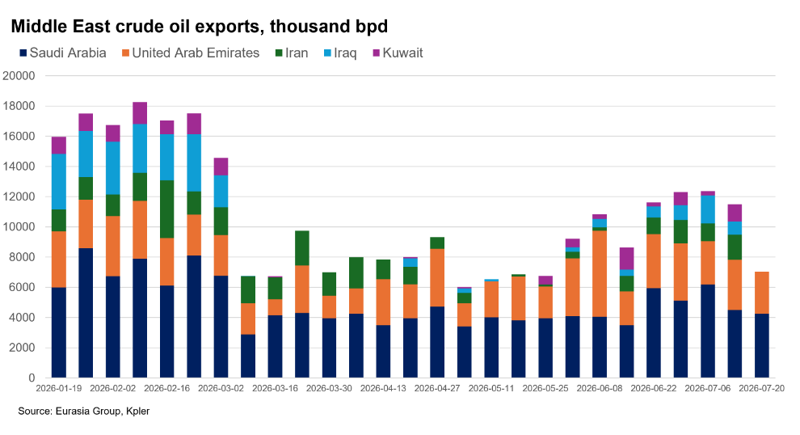
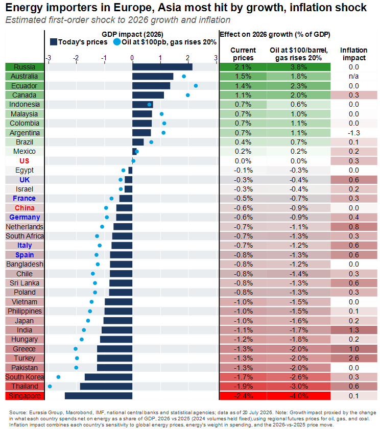
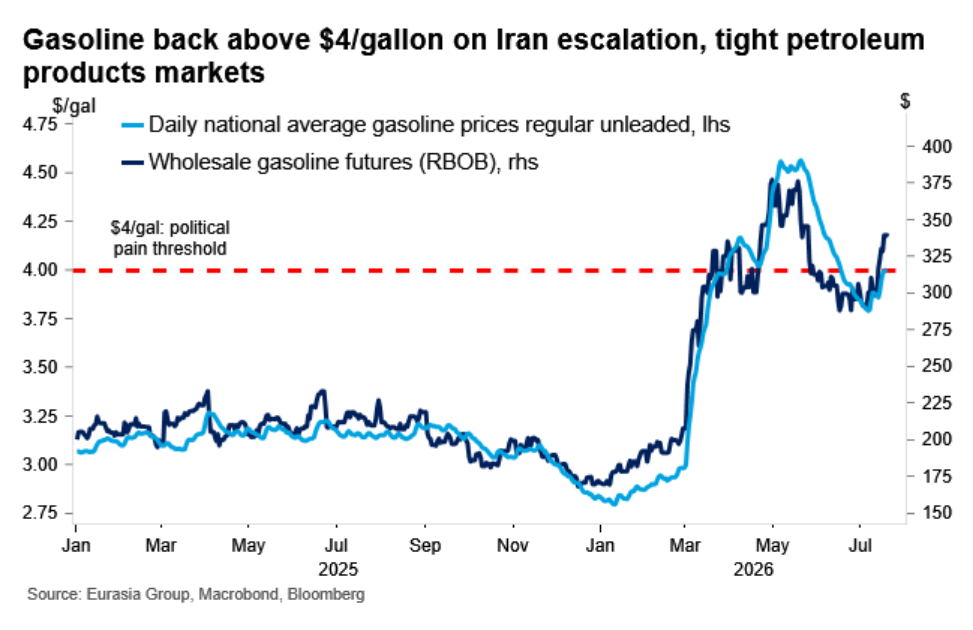
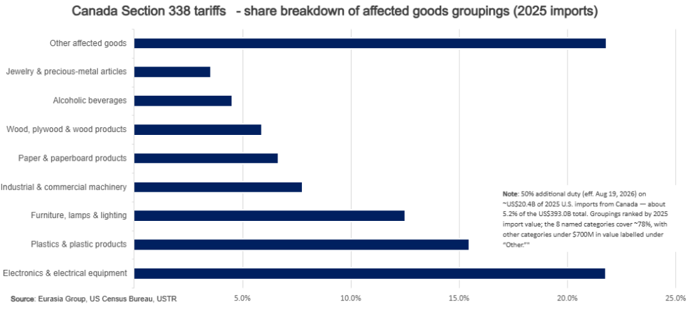

|
21 Jul 2026 08:24 EDT |
||
|
|||
|
|||
summary
|
|||
the top lineOil—Prices will rise further as multiple geopolitical conflicts tighten the market

Geoeconomics—US-Iran escalation reignites energy shock's economic toll
 
US, Iran—Troop deaths make de-escalation with Iran more difficult
US, Canada—Washington revives Section 338 to drive stalled USMCA talks with Canada

UK—Tax increases now likely in Burnham's first budget
Upcoming conference calls |
||
eg in depthMENA Crisis, Saudi Arabia, Yemen, Iran—Houthis likely to launch limited attacks to extract Saudi payoffs: Houthis likely to launch limited attacks to extract Saudi payoffs without major energy disruption. The group's leader, Abdul Malek al Houthi may signal escalation or de-escalation in a speech on Thursday, with military action potentially following soon after. The Houthis are using threats on Saudi shipping to extract financial support from Riyadh to pay public sector workers in Houthi-controlled areas. Any spike in attacks on traffic in the Red Sea is likely to remain short-lived, with the Houthis hoping to reach a deal with the kingdom after demonstrating a willingness to act. Read more here. Reach out to discuss: mena@eurasiagroup.net.
Upcoming events:
The EG Daily Brief is compiled by Jens Larsen, Lucy Eve, Babak Minovi, Pietro Guglielmi, Rahul Bhatia, Marilia Sirio, Joseph Craven, Martina Silva, and Trista Kelley, with help from Marina Tavares, and Astral Betteridge. |
||
 |
closing quipThis trade dispute has raised costs for families, particularly in the US. Canada stands ready to engage intensively to address outstanding issues with the US to the mutual benefit of our citizens.”—Canadian prime minister Mark Carney said in a statement said in a statement on 20 July. |
||
 |
|||